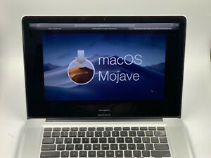

The evolution of macOS (and Mac OS X)
Progression of macOs
Mac OS has come a long way since System 1.0, and there’s no better way to see just how far we’ve come than to look at screenshots. From the earliest years to the latest versions, it’s a journey that is rather remarkable over three decades of development and refinement.
Since 2001, Apple has been naming every new release of Mac operating system after animals and famous California’s landmarks. Apart from being creative with names, it also brought lots of major functionality changes.
The first trial version was called as ‘Kodiak’ which was launched during September 2000. It was the first Apple OS which was given to general public for usage. t marked the first public availability of the Aqua interface, and Apple made many changes to the UI based on customer feedback.
On March 24, 2001, Apple released the first version of its Mac Os X operating system, noteworthy for its UNIX architecture.
OS X(now macOS) has been known over the years for it's simplicity, aesthetic interface, advanced technologies, applications, security and accessibility options. From the Finder to Spotlight, the Dock to iCloud, the operating system has been integrated into Apple's hardware, as well as iOS devices, so users can easily work and navigate.
OSX/macOS has become a brand identity for both Apple and its Mac lineup and has brodadly evolved over the years, even taking some of its shape from Apple's later launch of iOS, its mobile operating system.
HISTORY
Every MacOS release
Cheetah
Mac OS X 10.0 which was code named as ‘Cheetah’ was released during April 2001. The initial version was slow, incomplete, and had very few applications available at the time of its launch, mostly from independent developers. While many critics suggested that the operating system was not ready for mainstream adoption, they recognized the importance of its initial launch as a base on which to improve. The OS introduced the new Aqua interface which contained title bar with brushed metallic look, bright colored buttons on windows and photo-based icons. Cheetah also introduced the key feature called dock which is still used in modern Macs that is giving is significant appearance. New applications such as Mail, Address Book and Text Edit were introduced in this OS.
Puma
Mac OS X 10.1 which was code named as ‘Puma’ was released during September 2001. Apple released 10.1 as a free upgrade CD for 10.0 users. After the release of this OS, On January 7, 2002, Apple announced that Mac OS X was to be the default operating system for all Macintosh products by the end of that month. The OS provided faster menu navigation, more configuration options like moveable dock and new system menus which can control volume, battery life, etc. The OS made more support for the optical storage devices as DVD was made compatible with the OS and CD burning facilities was also introduced. Also, the operating system provided support for third party digital cameras and mp3 players.
Jaguar
Mac OS X 10.2 which was code named as ‘Jaguar’ was released during August 2002. It is the first operating system from apple which used its code name for branding. It brought great raw performance improvements, a sleeker look, and many powerful user-interface enhancements. The OS included universal access for the first time. It allowed users to magnify screens and launch applications using speech dictation. Apple’s famous grey Apple logo was introduced in this OS almost after 18 years of commencement of Mac. The OS featured an updated mail up which had a special folder for spam messages. Also, Apple introduced their default messenger ‘iChat’ in the operating system.
Panther
Mac OS X 10.3 which was code named as ‘Panther’ was released during October 2003. It also incorporated the most extensive update yet to the user interface. Panther included as many or more new features as Jaguar had the year before, including an updated Finder, incorporating a brushed-metal interface. It included a useful feature called expose, where users can view all the opened files at same time and view windows of the current program or files in the desktop. In this version of the operating system ‘iChat’ was enhanced as ‘iChat AV’ which allowed users to send messages using video and audio, additional to text. Safari became the default browser for this operating system. Also introduced a simple application called Font Book to manage fonts in the system, It also introduced a special feature called File Vault to encrypt hard drive with 128 byte keys.
Tiger
Mac OS X 10.4 which was code named as ‘Tiger’ was launched during April 2005. Apple stated that Tiger contained more than 200 new features. As with Panther, certain older machines were no longer supported. Among the new features, Tiger introduced Spotlight, Dashboard, Smart Folders, updated Mail program with Smart Mailboxes, QuickTime 7, Safari 2, Automator, Voice Over, Core Image and Core Video. The initial versions of Apple Tv also used operating system which resembled Tiger. It became the first operating system which supported Apple’s internal architecture. Tiger was the longest running version of Mac OS before leopard which was released 30 months later.
Leopard
Mac OS X 10.5 which was code named as ‘Leopard’ was released during October 2007. It was called by Apple “the largest update of Mac OS X”. Apple took a long gap to launch this operating system because of the success they got with the previous one. New features include a new look, an updated Finder, Time Machine, Spaces, Boot Camp pre-installed, full support for 64-bit applications (including graphical applications), new features in Mail and iChat, and a number of new security features. Automatic back up utilities were also introduced in this operating system which made a big impact on preserving users’ data. Leopard operating system supported multi touch gestures which was used in MacBook and MacBook Air during that time.
Snow Leopard
Mac OS X 10.6 which was code named as ‘Snow Leopard’ was released during September 2009. Rather than delivering big changes to the appearance and end user functionality like the previous releases of Mac OS X, the development of Snow Leopard was deliberately focused on “under the hood” changes, increasing the performance, efficiency, and stability of the operating system. Due to this operating system, Apple’s applications were re-written in 64-bit code too. The cost of the operating system was very low compared to the previous version. The OS introduced some utility programs like disk space clean-up to improve the performance of hard disk which was incorporated with the system. The size of the OS was also smaller, which was 7GB lesser than the previous version.
Lion
Mac OS X 10.7 which was code named as ‘Lion’ was released during April 2011. It brought developments made in Apple’s iOS, such as an easily navigable display of installed applications (Launchpad) and (a greater use of) multi-touch gestures, to the Mac. It dropped support for 32-bit Intel processors and requires 2GB of memory. The operating system officially supported multi touch gestures with added gestures and responses. In this operating system Applications can be viewed in full screen for the first time in the series of Mac operating systems. Auto saving features is also introduced to documents in this operating system.
Mount Lion
Mac OS X 10.8 which was code named as ‘Mount Lion’ was launched during July 2012. It incorporates some features seen in iOS 5, which include Game Center, support for iMessage in the new Messages messaging application, and Reminders as a to-do list app separate from iCal. Notification Center, which makes its debut in Mountain Lion, is a desktop version similar to the one in iOS 5.0 and higher. The OS incorporated with Facebook and Twitter so that users can set up their relevant profiles in their systems themselves. The operating system made it easier to connect Mac with Apple Tv by enhancing Air Play Mirroring. The OS also tightened security of the system by using Gatekeeper which will deny the installation of malicious software by allowing users to only download applications from Mac App Store and other identified developers. The OS also sold for a cheaper price.
Mavericks
Mac OS X 10.9 which was code named as ‘Mavericks’ was launched during October 2013. Apple released the operating system to users at free of cost. The first OS which was given without any price in the evolution of Mac OS. It placed emphasis on battery life, Finder enhancements, other enhancements for power users, and continued iCloud integration, as well as bringing more of Apple’s iOS apps to the OS X platform. Mavericks requires 2GB of memory to operate. It is the first version named under Apple’s then-new theme of places in California. This operating system supported retina display too. The icons in the operating system were redrawn from the previous versions of operating system.
Yosemite
Mac OS X 10.10 which was code named as ‘Yosemite’ was launched during October 2014. This Operating system was also launched as the free operating system at free of cost like the previous version. These two operating systems attracted more users towards Mac due to the cost-free policy. Yosemite discarded the skeuomorphic interface which was used in Mac operating systems for more than 10 years. It replaced skeuomorphism with flat graphic design and blurred translucency effects, following the aesthetic introduced with iOS 7. It introduced features called Continuity and Handoff, which allow for tighter integration between paired OS X and iOS devices. Cloud Storage is also made efficient in this operating system using iCloud Drive which enabled users to access data from anytime at any place. Mail Drop in this OS allowed users to send up to 5GB of data using email.

El Captain
Mac OS X 10.11 which was code named as ‘El Captain’ was launched in September 2015. It is the third operating system in a row which was given to users at free of cost. It enhanced the design and usability of Yosemite, the previous version, with performance and security improvements. Apple described this release as containing “Refinements to the Mac Experience” and “Improvements to System Performance” rather than new features. Multi Window tasking was made more easier using split Window options. A new graphic core technology which allowed apps and games to directly access Mac’s graphic processor for better performance.
Sierra
Mac OS X 10.12 was code named as ‘Sierra’ was released in September 2016. The OS featured several Mac-specific features, like searching for files. It also allowed websites to support Apple Pay as a method of transferring payment, using either a nearby iOS device or Touch ID to authenticate. iCloud also received several improvements, such as the ability to store a user’s Desktop and Documents folders on iCloud so they could be synced with other Macs on the same Apple ID. The operating system delivered more than 60 security fixes.
High Sierra
Mac OS X 10.13 was code named as ‘High Sierra’ was announced in June 2017 and released on September 2017. The release includes many under-the-hood improvements, including a switch to Apple File System (APFS), the introduction of Metal 2, support for HEVC video, and improvements to VR support. More than this several changes were made to the standard applications found in the previous version. A high video coding was done during the operating system which made the OS to deal with videos more efficiently.
Mojave
Mac OS X 10.14 was code named as ‘Mojave’ was announced in June 2018 and launched in September 2018. me of the key new features were the Dark mode, Desktop stacks and Dynamic Desktop, which changes the desktop background image to correspond to the user’s current time of day. Security enhancements were made using Safari Intelligent Tracking Prevention block user tracking without permission. The screen shot options enhanced more on-screen controls for increase control over images and videos.
Catalina
Mac OS X 10.15 was code named as ‘Catalina’ was announced during June 2019 and released during October 2019. It primarily focuses on updates to built-in apps, such as replacing iTunes with separate Music, Podcasts, and TV apps, redesigned Reminders and Books apps, and a new Find My app. It also features Sidecar, which allows the user to use an iPad as a second screen for their computer, or even simulate a graphics tablet with an Apple Pencil. It is the first version of Mac OS to support 32-bit applications. This update also removed Dashboard application which was a prime application in previous versions.